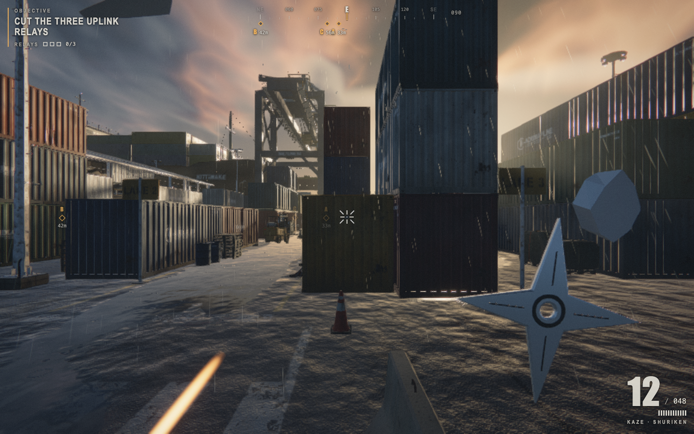

Saltline: Shuriken
The original Saltline rainy-port level, adapted with a thrown-shuriken weapon. Cross stacked containers, service buildings and the quay. Cut the three uplink relays, then reach the extraction boat.

Mission and combat
Use the compass markers to find the yard, shed and quay relays. Face a nearby relay and hold E or Interact until it is cut. Reinforcements arrive as the security network goes dark. After all three relays are disabled, reach the boat at the south quay. Flying Gulls and ground Hounds retain the original AI and weak points.
Your pouch holds 12 shuriken, with 48 in reserve. Throws spin through the scene and collide with cover or enemies; lead moving targets. Restock with R. A new mission resets the pouch. Aim steadies your view.
Controls
Desktop: WASD moves, mouse looks, left click throws, right click aims, R restocks, Space jumps, Shift sprints, C crouches, E interacts and Escape pauses. The original mouse-capture fallback and gamepad support remain available.
Phone: left thumb moves, right thumb looks. Use the original on-screen Fire/Throw, Aim, Reload/Restock, Jump and Interact controls. Settings retain original graphics and input options; choose a lower quality if your device struggles.
Coins, pause & privacy
Opening the cabinet is free. Starting or restarting a mission uses one coin through the existing server wallet; one coin covers all three seals and extraction. Pausing and resuming the same open mission are free. Closing the cabinet or refreshing the page discards the current mission. New guests start with 5 free coins; verified email accounts can claim 10 free coins once per Los Angeles day. Active VIP access follows the same website membership rules.
Coins have no cash value. Optional paid products are explained in billing help. Rewarded ads remain unavailable until approved and enabled. The game adds no advertising, tracking, external fonts or login service. The site wallet handles accounts separately.
Source & credits
Based on Saltline, credited by the archive to Felix Rieseberg and Claude Fable 5.2. Community source archive · Original artifact. The original port, geometry, rendering, materials, audio, input and game flow are retained. NanoFun changes the weapon and connects the cabinet start controls; it does not claim authorship of the original game.
Embedded Three.js retains its upstream license notices. No new license or ownership is asserted over the original game. Questions: superpowergames.us@gmail.com.